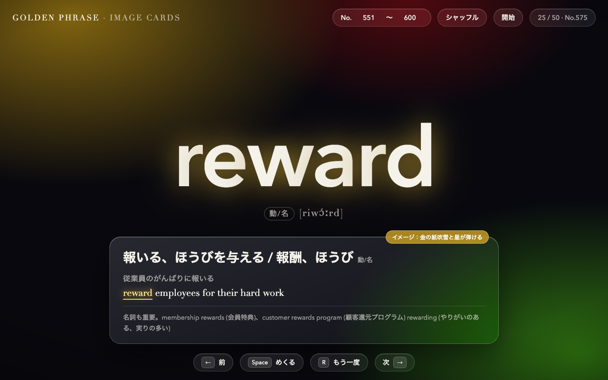

day40 の単語帳(Image Cards)は、素のままの HTML とはまるで別の見た目になった。その見た目を「どんな一言で頼めば出るか」に逆引きして、指示文と実物を並べたもの。右側(指示あり)は、day40 の style.css と同じ値で動いている実物。
※ ここの「指示」は、day40 で実際に書かれたCSS・コードから逆算して書き直した文面で、当日の発言そのものではない。当日のつぶやきは「各単語のイメージのエフェクトが起きるようにしたい」だけで、道具の選択はAI任せだった。
| 指示 | 起きること | |
|---|---|---|
| × 曖昧 | 「CSSでおしゃれにして」 | どこをどう変えるかが決まっていないので、AIは無難な範囲(余白・角丸・影)に落とす。写真映えする要素は選ばれない。 |
| ○ 型どおり | 「単語の文字に text-shadow で .35em のぼかしの光を、色相 --h と同じ色で」 | カード4と同じ見た目になる(場所・道具・数値・基準が全部ある)。 |
| ○ 基準だけ共通 | 「色は全部 --h 1つから hsl() で計算して」 | この一文で、背景・光・ボタンが連動する構造になる(カード9)。後から色を変えるのも1か所で済む。 |
単語ごとの色は defs.js の h: に色相(0〜360)で書いた。「金色」ではなく「色相 45」と言うほうが、狙いどおりに出る。
#07070d をベースに、radial-gradient を3枚重ねて、光が滲む空間にして。位置は左上・右下・上寄り。色は --h を基準に +0 / +55 / −45 ずらして hsl() で作り、透明度は .6 / .5 / .28。feTurbulence(fractalNoise)でフィルムのような粒子を重ねて。mix-blend-mode: overlay、不透明度 .22。画像ファイルは使わずコードだけで。backdrop-filter: blur(14px) saturate(1.4)、背景は白7%の半透明、border は白16%で1px、上辺に inset 0 1px 0 の白いハイライト。text-shadow で、色相 --h と同じ色の光を重ねて。0 0 .35em hsl(--h 100% 62% / .75)、その下に黒の影 0 .04em .5em rgba(0,0,0,.45) も。radial-gradient(120% 90% at 50% 45%, transparent 55%, rgba(0,0,0,.55)) を全面に被せて。container-type: size、文字は font-size: clamp(2.2rem, 15cqw, 11rem)。小さい枠(一覧)でも大きい枠でも同じ見た目に。Avenir Next の weight 600、letter-spacing: -.025em で詰める。発音や品詞は Didot(セリフ体)の小さな字で、letter-spacing: .08em と広めに。stagger をかけて現れさせて。動きは種類で指定する: rise(下から跳ねる)/ drop(上から落ちてバウンド)/ blur(ぼけから焦点)/ zoom(拡大から着地)/ flip(奥から起き上がる)/ slide(斜めに滑り込む)/ type(1字ずつ打つ)。--h(色相)1つから hsl() で計算して。背景のグラデ・文字の光・ボタンの色が同じ値を参照するようにして。単語が切り替わるたびに GSAP で --h を滑らかに動かして。粒子は物理演算で動くので、ここには埋め込まない。下の画像は No.575 の実機の撮影だが、紙吹雪が収まったあとで裏面(カード3のガラスのパネル)を開いた状態なので、紙吹雪そのものは写っていない。動く紙吹雪は index.html(No.575 を指定)か gallery.html で見る。

単語のイメージを「何が・どう動くか」を1文で言うと、そのまま効果名(fx)と色相(h)に割り当てられた。下は defs.js の img 欄(=指示の1文)と、その実物の切り抜き。全50個は gallery.html で動かして見られる。
| こういう感じにしたい | こう言う | カード |
|---|---|---|
| 光が滲む・空間がある | radial-gradient を何枚か重ねて、色は半透明で | 1 |
| フィルム・紙・ざらつき | SVG feTurbulence を overlay で重ねる | 2 |
| ガラス・すりガラス | backdrop-filter: blur + 白の薄い border + inset ハイライト | 3 |
| 文字がぼんやり光る | text-shadow に色相と同じ色の光 | 4 |
| 映画っぽい・中央に目が行く | ビネット(四隅を radial-gradient で暗く) | 5 |
| どの大きさでも同じ見た目 | container-type: size と cqw | 6 |
| 高級感・落ち着き | セリフ体(Didot) + 広めの letter-spacing と、本文は詰め気味の太字 | 7 |
| 1字ずつ現れる・跳ねる | GSAP の stagger(動きの種類名で指定) | 8 |
| 全体の色味が一緒に変わる | CSS 変数 --h 1つから hsl() で計算 | 9 |
| 紙吹雪・粒の群れ | tsParticles(loadFull が必須) | 粒 |
元の学びメモ: manabi.md ／ 単語→効果の割り当て: defs.js ／ 土台: style.css